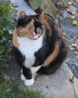

Ablauf einer Basis-Tierkommunikation
- Falls Sie mit Ihrem Tier nicht zu mir kommen, zahlen Sie bitte im Voraus.
- Nach erfolgter Zahlung schicken Sie mir bitte per email (astrid@commuhnicat.com) oder whatsup (+41 76 665 87 57) ein Foto Ihres Tieres. Ebenfalls benötige ich das Geburtsdatum (sofern bekannt) sowie das Geschlecht ihres Tieres.
- Formulieren Sie bitte auch möglichst genau Ihre Frage an Ihr Tier oder schildern Sie das Problem (per email oder whatsup)
- Nach erfolgter Kommunikation mit Ihrem Tier werde ich mich bei Ihnen per email oder whatsup melden, um ein Gespräch mit Ihnen zu vereinbaren.
- Das Gespräch mit Ihnen erfolgt erst nach der Kommunikation mit dem Tier, damit ich mich möglichst unbeeinflusst und unvoreingenommen auf die Kommunikation mit Ihrem Tier einlassen kann.
- Je nach gebuchter Leistung stelle ich Ihnen einen schriftlichen Bericht mit allfälligem komplementärmedizinischem Behandlungsvorschlag zu.
Tierkommunikation mit Liebe und Sorgfalt
Ich bin Mitglied im Berufsverband für Tierkommunikatoren in der Schweiz und richte mich nach den strengen Qualitätsvorgaben des Verbandes. Ich arbeite in bester Absicht und nach bestem Gewissen. Das Wohl des Tieres steht bei mir immer im Vordergrund. Es kann aber trotzdem manchmal zu "Übersetzungsfehlern" kommen. Deshalb biete ich die "Geld-zurück-Garantie" an, wenn Sie nicht zufrieden sind.

Meine Angebote Übersicht
| Name | Beschreibung | Preis |
|---|---|---|
| Basis TK | einfache Tierkommunikation ohne schriftlichen Bericht | CHF 60.- |
| Erweiterte TK | Ausführliche Tierkommunikation mit schriftlichem Bericht (wie Basis TK aber inkl. Chakraanalyse, Gesundheitscheck sowie Bachblütenempfehlung) | CHF 120.- |
| Notfall TK | Soforthilfe so schnell wie möglich, max. innerhalb 24h | CHF 100.- |
| vermisste Tiere | wie Notfall TK, Preis nach Zeitaufwand 120.-/h, pro 15min | CHF 120.-/h |
<Kontakt aufnehmen und eine TK buchenGeld zurück Garantie
Ich gebe kein Erfolgsversprechen ab, insbesondere bei vemissten Tieren. Wenn ich keine Verbindung zu Ihrem Tier aufbauen kann oder Sie unzufrieden mit dem Ergebnis sind, bekommen Sie Ihr Geld zurück.